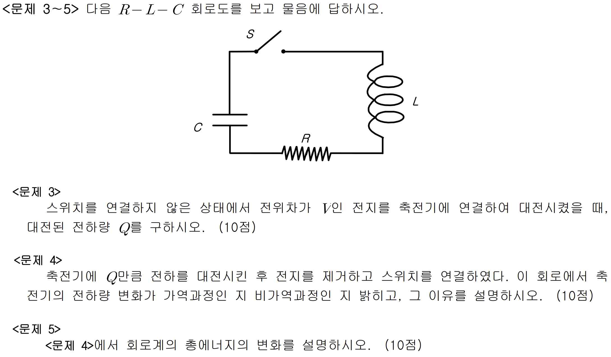

문제 10
다음 \(R-L-C\) 회로도를 보고 물음에 답하시오.

10-1
스위치를 연결하지 않은 상태에서 전위차가 \(V\)인 전지를 축전기에 연결하여 대전시켰을 때, 대전된 전하량 \(Q\)를 구하시오. (10점)
10-2
축전기에 \(Q\)만큼 전하를 대전시킨 후 전지를 제거하고 스위치를 연결하였다. 이 회로에서 축전기의 전하량 변화가 가역과정인 지 비가역과정인 지 밝히고, 그 이유를 설명하시오. (10점)
10-3
<문제 10-2>에서 회로계의 총에너지의 변화를 설명하시오. (10점)